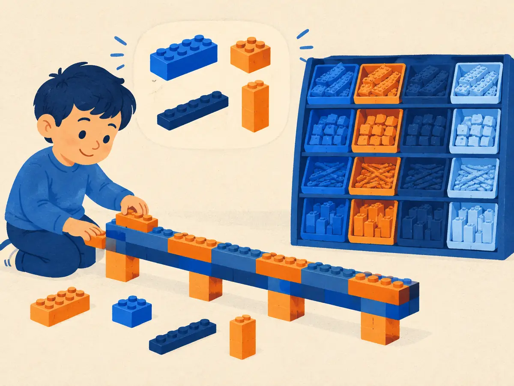

Tokenization (BPE)
An LLM never sees letters or words. Before anything else, a tokenizer chops text into pieces from a fixed vocabulary and replaces each piece with an integer ID. How it chops explains a surprising number of LLM quirks, from miscounting the r's in "strawberry" to fumbling long multiplication.
By the end you can
- Explain why LLMs use subword tokens rather than characters or whole words.
- Run byte-pair encoding by hand: count pairs, merge the most frequent, repeat, then encode new words.
- Use tokenization to explain odd LLM behaviour with spelling, numbers, other languages and whitespace.
Two quick guesses.
What does GPT-4 actually receive when you type the question "How many r are in strawberry?"
- The 29 characters, one at a time
- The 6 words, each as a dictionary entry
- A picture of the text
- 7 integer IDs, one per token, where " strawberry" is a single token
A tokenizer learns its vocabulary from a big pile of text. Which pieces most likely become single tokens?
- Long, rare words, because they carry the most meaning
- Frequent words and frequent word parts, like " the" or "ing"
- Only single letters
- Exactly the entries of an English dictionary
Characters or words? Neither.
A model needs a fixed list of symbols, its vocabulary, so that it can output one probability per symbol (P3.2). Two obvious choices both fail:
- Characters (or the 256 possible bytes). Tiny vocabulary, and nothing is ever unknown. But sequences get roughly 4 to 5 times longer than with subword tokens, and attention's cost grows with the square of the length (M1.1). Each position also carries very little meaning, so the model must spend layers just assembling letters into words.
- Whole words. Short sequences, but the vocabulary explodes: every name, typo, number, URL and inflection ("run", "runs", "running", "rerun") needs its own entry, and anything unseen becomes an "unknown" token. Each form is also learned separately, with no sharing.
Subword tokens sit in between. Frequent words get a token of their own; rare words are spelled out of reusable pieces. Typical vocabularies hold tens of thousands to a couple of hundred thousand tokens: 32,000 for Llama 2, 50,257 for GPT-2, about 100,000 for GPT-4, 128,256 for Llama 3 and about 200,000 for GPT-4o.
Byte-pair encoding
The most common way to learn those pieces is byte-pair encoding (BPE). It started as a data-compression trick (Gage, 1994) and was adapted for neural translation by Sennrich, Haddow & Birch (2016). Training it on a corpus is a simple loop:
- Start with every word split into single symbols (characters, or bytes).
- Count every adjacent pair of symbols across the corpus, weighted by how often each word occurs.
- Merge the most frequent pair into one new symbol everywhere, and record the merge rule.
- Repeat until the vocabulary reaches the target size. Vocabulary size = base symbols + number of merges.
The output is an ordered list of merge rules. To encode new text, split it into base symbols and replay the merges in the same order.
Explain like I'm 5

You have a box of tiny one-stud bricks, one for each letter. Building every word from tiny bricks takes ages.
So you notice which two bricks you keep sticking together, and glue them into a new, bigger brick. Then you look again and glue the next most popular pair, maybe a glued brick plus another one. After a while your colour bins hold a few hundred handy bricks: some are whole words you build all the time, some are common bits like "est".
Now you can build almost anything quickly, and for a shape you've never built before you still have the tiny bricks to fall back on.
Where it breaks: the "bricks" are picked purely by how often letters appear together, not by meaning, so they often don't match real word parts.
Worked example
In the animation's corpus (low ×4, lowest ×7, fastest ×5, longest ×5), why did s t win the first round with 22?
- "lowest" contains s t once and appears 7 times: $7$.
- "fastest" contains s t twice (fastest) and appears 5 times: $2 \times 5 = 10$.
- "longest" contains it once and appears 5 times: $5$. "low" has none.
- Total: $7 + 10 + 5 = 22$, beating e s ($7 + 5 + 5 = 17$) and l o ($4 + 7 + 5 = 16$) ✓
A new corpus: ab ×4, abc ×3, bc ×2, split into characters.
- Weighted count of the pair a b:
- Weighted count of b c: So the first merge is a + b → ab.
- Corpus length in symbols before the merge: and after it:
- After merge #2 (ab + c → abc), how many tokens does the unseen word abcab become?
Vocabulary size is a trade-off
More merges mean longer tokens and shorter sequences, so each forward pass covers more text and the context window holds more. But every extra token adds a row to the embedding table and a column to the output layer (P3.4), each of size $d$, the model width. Rare tokens also get few training examples, so their vectors stay poorly trained. An extreme case was ␣SolidGoldMagikarp, a Reddit username that was a single token in the GPT-2 and GPT-3 vocabularies but almost never appeared in the training text. Prompts containing it produced bizarre outputs (Rumbelow & Watkins, 2023).
Playground: learn merges, watch the text shrink
BPE trained on the paragraph below. Slide to learn more merges; each coloured chip below is one token.
Byte-level BPE: nothing is ever unknown
If the base symbols are characters, a character missing from training (an emoji, a rare script) has no token at all. GPT-2 (Radford et al., 2019) fixed this by running BPE on the bytes of the UTF-8 encoding instead. There are only 256 possible bytes, so any string can be encoded. GPT-2's vocabulary is exactly 256 bytes + 50,000 merges + 1 special end-of-text token = 50,257.
The price is that a token can be part of a character. The emoji 🙂 is 4 bytes in UTF-8, and GPT-4's tokenizer splits it into 2 tokens of 2 bytes each; GPT-4o's larger vocabulary has it as one token.
Real tokenizers also pre-tokenize with a regular expression before BPE: the text is split into chunks such as words (with their leading space), runs of digits and punctuation, and merges never cross chunk boundaries. GPT-4's tokenizer, for example, splits digits into chunks of at most three. Other popular schemes include WordPiece (used by BERT) and SentencePiece (Kudo & Richardson, 2018), a library that tokenizes raw text, spaces included, and powers T5 (with its unigram model) and the first two Llama generations (BPE with a fallback to bytes for unknown characters).
Tokens are not words
Real examples from GPT-4's tokenizer (cl100k_base), with ␣ marking a space that is part of the token:
␣strawberryis one token, but at the very start of a text, without the space, it'sstrawberry. The same word can tokenize differently depending on what's around it.␣unhappinessbecomes␣unhappiness, not "un + happiness". Pieces follow frequency, not grammar.␣hellois one token;␣HELLOis two,␣HELLO. Case matters.1234is1234, but12345is12345. The chunks run left to right, so the same token can stand for different place values.- "Здравствуйте" (Russian for "hello") takes 14 tokens with GPT-3's tokenizer, 6 with GPT-4's and 1 with GPT-4o's.
Why tokenization explains odd LLM behaviour
- Spelling and letter counting. The model sees the ID for
␣strawberry, not s-t-r-a-w-b-e-r-r-y. It can only answer "how many r's?" if it has learned each token's spelling indirectly from training data. - Arithmetic. Digits are grouped into chunks that don't line up with place value, so carrying across chunk boundaries is awkward. This is one reason Llama 1 and 2 split every number into single digits (Touvron et al., 2023).
- Other languages pay more. Text in languages underrepresented in the tokenizer's training data needs more tokens for the same meaning, so it costs more and fits less in the context window (Petrov et al., 2023).
- Whitespace and formatting. " Hello" and "Hello" are different tokens, so a stray trailing space in a prompt can shift what the model expects next. Runs of spaces in code indentation get their own tokens.
cl100k_base), and many other languages need far more tokens. The tokenizer is also frozen before pretraining: change it, and the embedding table (P3.4) no longer matches, which is why a model and its tokenizer always ship together.Explain how BPE builds its vocabulary, and why that makes "how many r's are in strawberry?" hard for an LLM.
During BPE training, which pair gets merged next?
- The pair that forms a real English word
- A random pair, to keep the vocabulary diverse
- The adjacent pair with the highest count across the corpus, weighted by word frequency
- The longest possible pair
What is the main advantage of byte-level BPE over character-level BPE?
- Any string can be encoded, since every text is made of the 256 possible bytes, so there is no "unknown" token
- Tokens always line up with whole characters
- Sequences become shorter than with any other tokenizer
- It needs no training
A team grows its vocabulary from 32,000 to 128,000 tokens. What is the most likely effect?
- Longer sequences and a smaller embedding table
- No change, since vocabulary size only matters for non-English text
- The model can no longer encode rare words
- Shorter sequences for the same text, but bigger embedding and output matrices, and rarer tokens with fewer training examples each
The same document is 1,000 tokens with tokenizer A and 2,000 tokens with tokenizer B. Roughly how many attention scores does each layer and head compute with B, compared with A (M1.1)?
- The same number
- About 4 times as many
- About twice as many
- Half as many
Key takeaways
- LLMs read token IDs. Subword tokens balance vocabulary size against sequence length.
- BPE: start from characters or bytes, repeatedly merge the most frequent adjacent pair, and record the merges; encode by replaying them in order.
- Byte-level BPE can encode any string; pre-tokenization keeps merges inside words, numbers and punctuation chunks.
- Bigger vocabularies give shorter sequences but larger embedding and output matrices, and rarer tokens.
- Tokens ≠ words: they explain trouble with spelling, digit arithmetic, non-English cost and stray whitespace.
Build a BPE tokenizer from scratch in plain Python: count pairs, merge, train on a small corpus, then encode and decode with a round-trip check, including byte-level text with emoji. About 25 minutes, runs free in your browser.
Add this lesson's cards to your spaced-review deck.